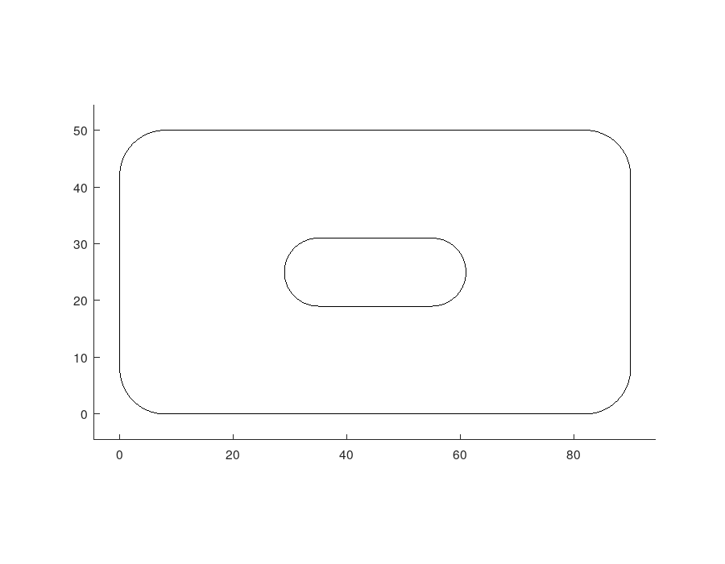
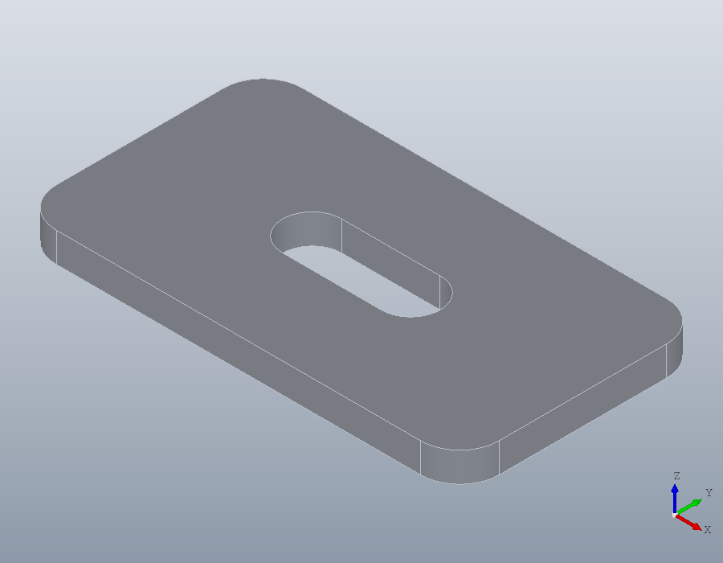
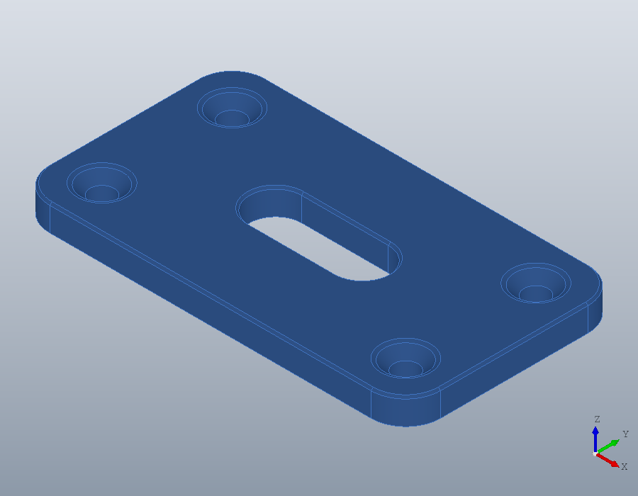

A first part
A mounting plate from sketch to files: an outline drawn as a region, made solid, drilled, edged, measured, and saved for a CAD program and a slicer.
The outline
A part starts as a flat shape. Its outline here is a rectangle 90 by 50 millimetres, given by its corners as a closed geom.Polyline, and fillet rounds every corner of it.
outline = geom.Polyline ([0, 0; 90, 0; 90, 50; 0, 50], 'Closed', true);
outline = fillet (outline, 8)outline =
geom.Polyline: closed, 8 vertices, 4 arcsA slot is two straight sides and two half circles. A polyline draws it as one shape: each vertex is [x, y, bulge], and a bulge of 1 makes the segment leaving that vertex a half circle.
slot = geom.Polyline ([35, 19, 0; 55, 19, 1; 55, 31, 0; 35, 31, 1], ...
'Closed', true)slot =
geom.Polyline: closed, 4 vertices, 2 arcsgeom.Region holds a flat area: one outline, and any holes in it given as a cell array. It checks that they make a valid shape, so a hole that crossed the outline would be refused here and not later.
R = geom.Region (outline, {slot})R =
geom.Region: an outline of 8 segments, 1 holeA region is drawn by putting it in a draw.Drawing and plotting that.
plot (draw.Drawing ().region (R));
The solid
solid.extrude raises the region along the normal of its plane, here the z axis, into a solid 6 millimetres thick. show draws it in a window of its own; the picture below is that window.
S = solid.extrude (R, 6);
show (S);
Holes and edges
hole drills at points on the surface, straight down unless told otherwise, and a depth of Inf goes right through. Four clearance holes for M5 countersunk screws, 5.5 millimetres across, each with a 90 degree seat 10.4 millimetres across at the surface:
P = [10, 10, 6; 80, 10, 6; 10, 40, 6; 80, 40, 6];
S = hole (S, P, 5.5, Inf, 'Countersink', 10.4);Edges are chosen by what they are rather than by number. faces with a 'Normal' picks the faces looking up, edges with 'Face' the edges round them, and chamfer bevels those, 0.5 millimetres each way.
F = faces (S, 'Normal', [0, 0, 1]);
S = chamfer (S, edges (S, 'Face', F), 0.5);
show (S);Measuring
A solid knows its volume in cubic millimetres, its surface area, and its size along each axis, the second output of bbox.
volume (S)
area (S)
[~, L] = bbox (S)ans = 2.3658e+04
ans = 1.0294e+04
L =
90 50 6Files
write saves the part in the format the file's extension names. A STEP file keeps the exact geometry, for a CAD program; an STL file holds triangles, for a slicer. A colour set on the solid travels with it into the STEP file and into the viewer.
S.Colour = [0.25, 0.45, 0.75];
write (S, 'plate.step');
write (S, 'plate.stl');
show (S);
Reading the STEP file back gives the same solid.
B = solid.read ('plate.step');
volume (B)ans = 2.3658e+04